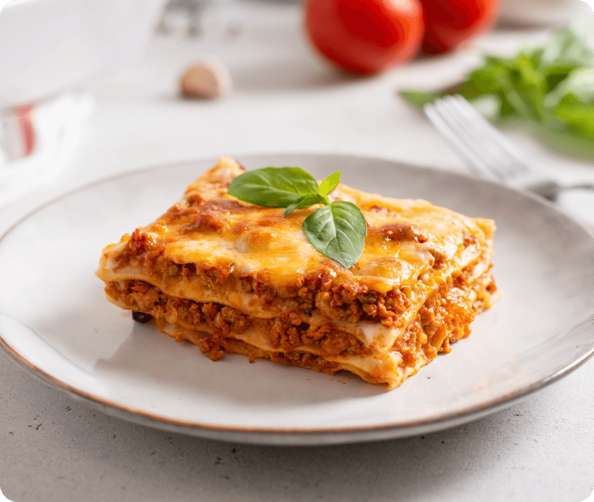

Lasagna

Description
This lasagna recipe takes a little work, but it is so satisfying and filling that it's worth it!
Ingredients
- Meat: italian sausages and ground beef.
- Onion and garlic: an onion and two cloves of garlic.
- Tomato products: a can of crushed tomatoes, two cans of tomato sauce, and two cans of tomato paste.
- Sugar: two tablespoons
- Spices and seasonings: parsley, basil, salt, italian seasoning, fennel seeds, and black pepper.
- Lasagna noodles: obviously.
- Cheeses: Parmesan, mozzarella, and ricotta.
- An egg: because.
Steps
- Make the meat sauce.
- Cook the noodles.
- Make the ricotta mixture.
- Layer the lasagna putting everything in between.
- Cover with foil and bake.
- Let the lasagna rest before serving.
Home